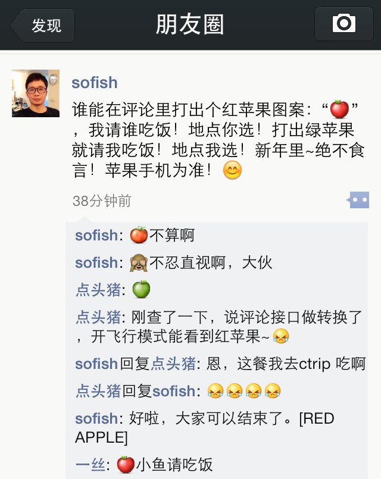
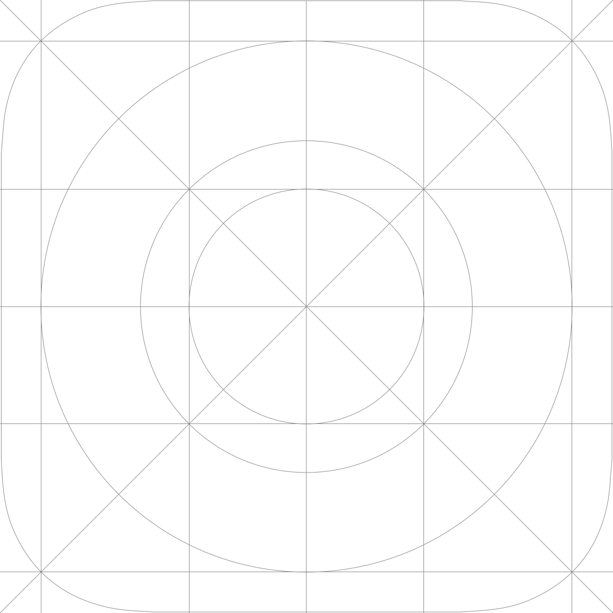
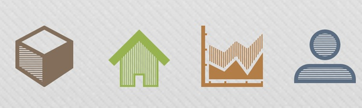

我是一丝
阿里巴巴前端






1. 引用字体
@font-face {
font-family: 'FontName';
src:url('FileName.eot'); /* IE9+ */
/* IE6-IE8 */
src:url('FileName.eot?#iefix') format('embedded-opentype'),
/* CR,FF */
url('FileName.woff') format('woff'),
/* CR,FF,OP,Safari,Android, iOS 4.2+ */
url('FileName.ttf') format('truetype'),
/* iOS 4.1- */
url('FileName.svg#FontName') format('svg');
}
2. 定义一个Class使用字体
.iconfont {
font-family: "iconfont";
font-size: 16px;
font-style: normal;
font-weight: normal;
font-variant: normal;
line-height: 1;
speak: none;
-webkit-font-smoothing: antialiased;
-moz-osx-font-smoothing: grayscale;
}
3. 获取图标编码
#3301

标题前面有一个图标
.icon-size {
content: "\3436";
}
见证奇迹的时刻到了！
放大后：



《超越 icon font》上海场